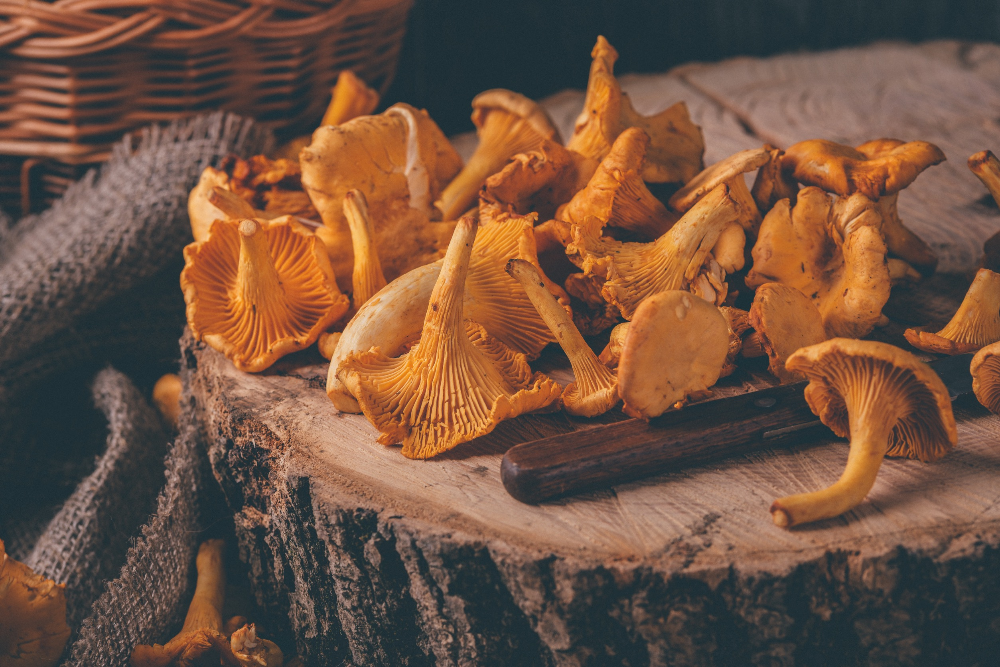
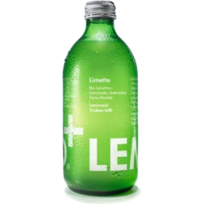

Organic,
as nature intended.
Our organic range is carefully sourced from trusted growers who farm with respect for the land, biodiversity and your wellbeing.
How we source
Rooted in trust
We work closely with organic growers who share our values of
quality, care and respect for the land. Every product is
carefully selected for its freshness, flavour and provenance.
From the farm to our shelves, we take care to source produce
from trusted growers and producers who take pride in what they
do.
We look beyond the label when choosing what to bring into the
shop. We consider how each product is grown, where it comes
from and the care that goes into producing it. By building
relationships with growers and producers we trust, we can
offer organic food that meets the high standards we expect
from everything we sell.
Our selection changes with the seasons, allowing us to bring
in produce when it is naturally at its best. From fresh
organic fruits and vegetables to juices, eggs, butter, dates
and olives, each product is chosen for its quality and
character. We believe that good food starts with good
farming, and that care can be tasted in the finished product.


Why buy organic?
Nourished by nature
Organic produce is better for you and better for the planet. Organic farming restricts the use of synthetic pesticides and fertilisers, meaning organic foods can have lower levels of pesticide residues. Some studies have also found differences in certain nutrients and beneficial plant compounds. Organic farming also supports healthier soils, greater biodiversity and more sustainable growing practices. For us, organic is about choosing food that is grown with care; wholesome, naturally produced and responsibly sourced.
From beautifully ripe fruits and fresh vegetables to wholesome juices, rich butter, naturally sweet dates, olives and farm-fresh eggs, our organic range is chosen for its quality, flavour and provenance. We believe that good food starts with good farming, and that the way food is grown matters. By supporting organic growers and producers, we help encourage farming methods that work with nature rather than against it, while bringing you food that is full of natural goodness and made to be enjoyed at its best.
Explore our organic produce
Fruits
Alongside our fresh fruit and vegetables, we also stock a selection of organic products from around the world, chosen for their quality, flavour and individuality. You'll find everything from organic juices and creamy butter to naturally sweet dates, rich olives and fresh eggs, with the range changing regularly depending on our customers' requests and the season. These are the sorts of products that make a kitchen more interesting; whether you're looking for something for breakfast, an ingredient for cooking, a refreshing juice or simply something delicious to take home and try. We believe the smaller things in your kitchen deserve just as much attention as the main ingredients. It's a constantly changing collection, and one of our favourite places to find something unexpected.





Vegetables
Alongside our fresh fruit and vegetables, we also stock a selection of organic products from around the world, chosen for their quality, flavour and individuality. You'll find everything from organic juices and creamy butter to naturally sweet dates, rich olives and fresh eggs, with the range changing regularly depending on our customers' requests and the season. These are the sorts of products that make a kitchen more interesting; whether you're looking for something for breakfast, an ingredient for cooking, a refreshing juice or simply something delicious to take home and try. We believe the smaller things in your kitchen deserve just as much attention as the main ingredients. It's a constantly changing collection, and one of our favourite places to find something unexpected.
Juice
Alongside our fresh fruit and vegetables, we also stock a selection of organic products from around the world, chosen for their quality, flavour and individuality. You'll find everything from organic juices and creamy butter to naturally sweet dates, rich olives and fresh eggs, with the range changing regularly depending on our customers' requests and the season. These are the sorts of products that make a kitchen more interesting; whether you're looking for something for breakfast, an ingredient for cooking, a refreshing juice or simply something delicious to take home and try. We believe the smaller things in your kitchen deserve just as much attention as the main ingredients. It's a constantly changing collection, and one of our favourite places to find something unexpected.
Pantry
Alongside our fresh fruit and vegetables, we also stock a selection of organic products from around the world, chosen for their quality, flavour and individuality. You'll find everything from organic juices and creamy butter to naturally sweet dates, rich olives and fresh eggs, with the range changing regularly depending on our customers' requests and the season. These are the sorts of products that make a kitchen more interesting; whether you're looking for something for breakfast, an ingredient for cooking, a refreshing juice or simply something delicious to take home and try. We believe the smaller things in your kitchen deserve just as much attention as the main ingredients. It's a constantly changing collection, and one of our favourite places to find something unexpected.